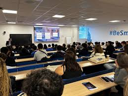

L'Excellence au Service du Numérique et de l'Innovation Le cycle de formations de l'EFREI, du Post-Bac au niveau Ingénieur/Mastère (Bac+5), a pour vocation de former des experts du numérique et des professionnels responsables, capables de diriger la transformation technologique. Notre pédagogie est construite autour de trois objectifs fondamentaux : Expertise Technique de Pointe : Maîtriser le socle fondamental (développement, systèmes, data) et développer une expertise de pointe en IA, Cybersécurité, Cloud, et Data Science, pour concevoir des solutions performantes. Gestion de Projet et Leadership : Acquérir la posture managériale pour piloter des projets complexes (méthodes Agile/Scrum), coordonner des équipes techniques et intégrer les enjeux éthiques et stratégiques. Innovation et Création de Valeur : Cultiver l'esprit entrepreneurial en transformant les idées en solutions concrètes et durables, que ce soit par la création de produit ou la R&D.
Programma Grandes Écoles Choisissez parmi nos fillières et spécialités pour construire votre parcours d’ingénieurs
Programme Technologies et Numériques Découvrez nos formations pour construire un parcours qui vous ressemble

Programma Digital et management Devenez expert en communication digitale, marketing ou UX design
